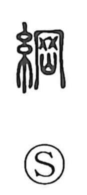

綱

Kun: tsuna | On: kou
rope ・ to gather, collect ・ outline
Explanation
綱 is a phono-semantic character. The silk radical 糸 indicates something made of cord or threads, while 岡 functions as the phonetic and also contributes meaning. Shirakawa reads 岡 as a figure of a casting mold subjected to fire—here expressed by the element shaped like a mountain, 山—evoking the intense heating that bakes and hardens the mold. From this image 岡 carries the sense of being tightened and made firm. Accordingly, 綱 names a rope formed by twisting strands into a single, tough cable that cannot easily be cut. By extension it means a rope, the act of drawing things together or collecting them, and in compounds such as 大綱 it signifies the main outline or fundamental framework.